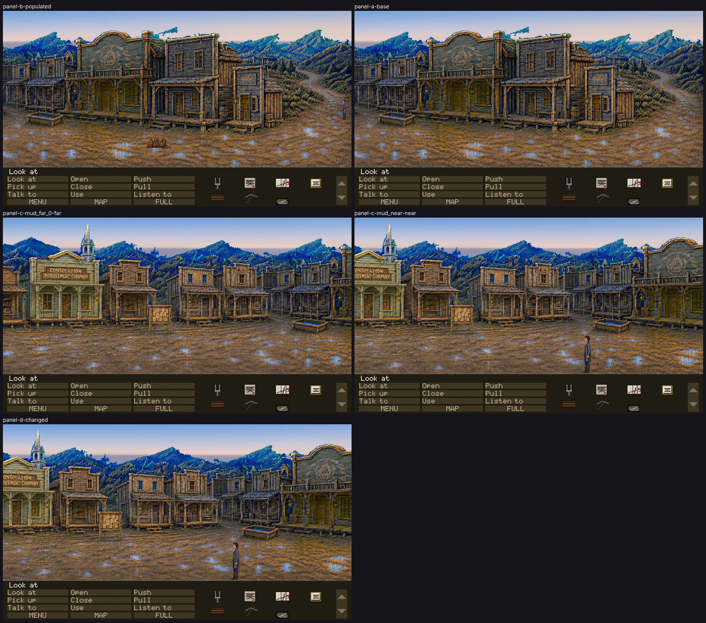

Every frame below is the full play area as the renderer drew it, in the running
game, at f4306489 on ccr-347d40c6-71r9f9.
No crop, isolated sprite or source image appears here: those are for diagnosing what a full
frame has already shown.
These panels establish technical admissibility only. Nothing here says the
art is good, in style, funny or approved. Only Tyler sets visual_accepted.

THE COMMITTED SHEETEvery panel, complete, at
50% —
downscaled, never cropped. The full-resolution captures are reproducible test artifacts
and are not in git; their hashes are below.
PASS — technically admissible
PANEL B — normal populated stateroom main_street_dawn · camera 1780 ·
flags T_OPENING_SAID T_COACH_DEPARTED T_UNDERTAKER_NAMED T_HOB_CROSSING T_THAD_LEAVING T_HOB_SPOKEN T_HOB_GONE T_PIKE_DEAD T_OPENING_DONE T_SEEN_MAIN_STREET T_SWINDLED T_CASE_DOWN T_CASE_TAKEN T_BORDERS_MOTT T_STRIKE_FOUND T_ASSAY_QUEUE T_HOB_HANDWRITING T_SURVEY_NEEDED T_DEED_LODGED T_SURVEY_LODGED T_NINETY_DAYS T_NEED_TO_DIE T_EXECUTOR_RULE T_EXECUTOR_NAMED T_SAME_HAND T_DECEASED T_DINED T_EXCAVATION_CLAUSE T_PICKAXE_ON_ACCOUNT T_HOB_IS_MOTT T_NO_GOLD_EVER T_WARM_HOLE T_DRAUGHT T_PRATT_STAKE T_PRATT_JUMP_SEEN T_DUG_DOWN T_FORK_STRUCK T_VOID_FOUND T_IN_TUNE T_BROKE_THROUGH ·
inventory tuning_fork deed company_map invitation blanket pickaxe samplethad @3660,600 111px spritePANEL A — base state, cast suppressedroom main_street_dawn · camera 1780 ·
flags T_OPENING_SAID T_COACH_DEPARTED T_UNDERTAKER_NAMED T_HOB_CROSSING T_THAD_LEAVING T_HOB_SPOKEN T_HOB_GONE T_PIKE_DEAD T_OPENING_DONE T_SEEN_MAIN_STREET T_SWINDLED T_CASE_DOWN T_CASE_TAKEN T_BORDERS_MOTT T_STRIKE_FOUND T_ASSAY_QUEUE T_HOB_HANDWRITING T_SURVEY_NEEDED T_DEED_LODGED T_SURVEY_LODGED T_NINETY_DAYS T_NEED_TO_DIE T_EXECUTOR_RULE T_EXECUTOR_NAMED T_SAME_HAND T_DECEASED T_DINED T_EXCAVATION_CLAUSE T_PICKAXE_ON_ACCOUNT T_HOB_IS_MOTT T_NO_GOLD_EVER T_WARM_HOLE T_DRAUGHT T_PRATT_STAKE T_PRATT_JUMP_SEEN T_DUG_DOWN T_FORK_STRUCK T_VOID_FOUND T_IN_TUNE T_BROKE_THROUGH ·
inventory tuning_fork deed company_map invitation blanket pickaxe samplethad @3660,600 111px spritePANEL D — principal changed state: DOC 48 S7 BEATS 3-4, as state: T_CLOSE_SAID set by the flag control, the coach stop gone and the street left at its close. The close itself -- 'Leave the mud.' and the letter over black -- is played by clicking the stop in the doors route (tools/gauntlet/routes/main-street-dawn-doors.json), from where the fixture stands him; by panel D the proof has moved him far down the street.room main_street_dawn · camera 595 ·
flags T_OPENING_SAID T_COACH_DEPARTED T_UNDERTAKER_NAMED T_HOB_CROSSING T_THAD_LEAVING T_HOB_SPOKEN T_HOB_GONE T_PIKE_DEAD T_OPENING_DONE T_SEEN_MAIN_STREET T_SWINDLED T_CASE_DOWN T_CASE_TAKEN T_BORDERS_MOTT T_STRIKE_FOUND T_ASSAY_QUEUE T_HOB_HANDWRITING T_SURVEY_NEEDED T_DEED_LODGED T_SURVEY_LODGED T_NINETY_DAYS T_NEED_TO_DIE T_EXECUTOR_RULE T_EXECUTOR_NAMED T_SAME_HAND T_DECEASED T_DINED T_EXCAVATION_CLAUSE T_PICKAXE_ON_ACCOUNT T_HOB_IS_MOTT T_NO_GOLD_EVER T_WARM_HOLE T_DRAUGHT T_PRATT_STAKE T_PRATT_JUMP_SEEN T_DUG_DOWN T_FORK_STRUCK T_VOID_FOUND T_IN_TUNE T_BROKE_THROUGH T_CLOSE_SAID ·
inventory tuning_fork deed company_map invitation blanket pickaxe samplethad @1875,857 206px spritePANEL C — mud_far_0 far, authored y585expected 105px · runtime 105px ·
silhouette 105px, bottom y584art/actors/thad-idle-left/idle-02.pngPANEL C — mud_near near, authored y857expected 206px · runtime 206px ·
silhouette 206px, bottom y856art/actors/thad-idle-left/idle-05.png